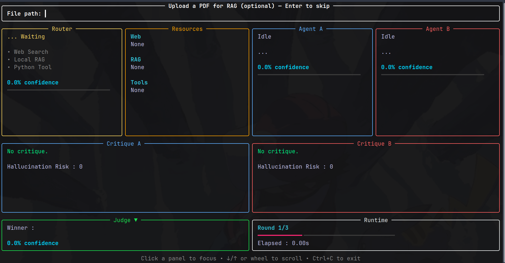
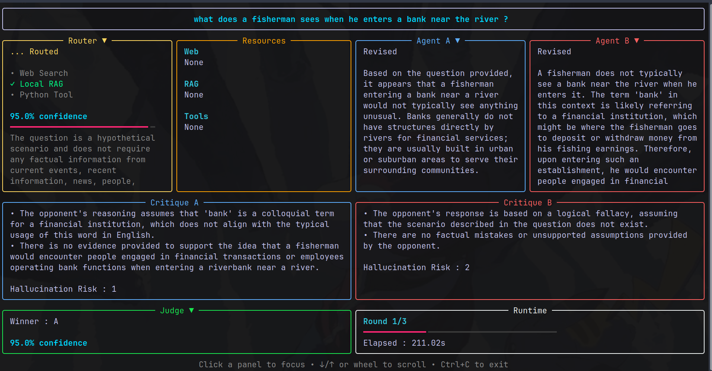

Agent A and Agent B independently answer your question, critique each other, revise, and repeat until they converge or run out of rounds — then an impartial judge picks a winner. A live terminal UI shows every step as it happens.

The terminal UI isn't decorative — each region reflects one thing the engine is actually doing right now, streamed over an event bus as the debate runs.
An LLM decides per-question whether to use web search, local documents, a Python tool, or nothing — and shows its confidence and reasoning.
Whatever gets pulled in — search snippets, PDF chunks, tool output — is shown verbatim, not hidden inside the prompt.
Two agents answer separately, each with their own resources, so neither can just copy the other's reasoning.
Each agent critiques the other's answer for weaknesses and hallucination risk before either gets to revise.
A separate judge call picks a winner with reasoning and a confidence score — it never sees which agent is which.
Rounds stop when answers converge or hallucination risk drops low — not just after a fixed count.
The debate engine only knows how to emit() events onto a thread-safe
queue. The terminal UI only knows how to consume them. Swap the UI for a web
frontend, a logger, or nothing, and the debate logic doesn't change.
LangGraph runs the debate on a background thread; Rich renders the live view on the main thread. They only ever talk through the event queue.
flowchart LR
subgraph Engine["Debate Engine (LangGraph)"]
G[graph.py] --> A1[agents/debater_a.py]
G --> A2[agents/debater_b.py]
G --> J[agents/judge.py]
G --> C[agents/debate_controller.py]
A1 --> RM[tools/resource_manager.py]
A2 --> RM
RM --> WEB[tools/search.py]
RM --> RAG[rag/retriever.py]
RM --> PY[tools/python_tool.py]
RM --> ROUTE[tools/resource_router.py]
end
subgraph Bridge["Event Bus"]
EM[ui/emitter.py] --> EB[(ui/event_bus.py<br/>thread-safe queue)]
end
subgraph UI["Terminal UI (Rich)"]
EB --> R[ui/renderer.py]
R --> ST[ui/state.py]
R --> L[ui/layout.py]
L --> P[ui/panels/*]
end
Engine -. emit(Event) .-> EM
A1 -.-> EM
A2 -.-> EM
J -.-> EM
C -.-> EM
RM -.-> EM
Ollama[(Ollama<br/>qwen2.5:3b / 1.5b)] -.-> A1
Ollama -.-> A2
Ollama -.-> J
Ollama -.-> ROUTE
Both debaters answer in parallel, critique each other in parallel, revise in parallel, then synchronize before the controller decides: loop again, or hand off to the judge.
flowchart TD
START([START]) --> DA[debater_a]
START --> DB[debater_b]
DA --> CB["critique_b<br/><i>B critiques A's answer</i>"]
DB --> CA["critique_a<br/><i>A critiques B's answer</i>"]
CA --> RA[revise_a]
CB --> RB[revise_b]
RA --> SYNC["sync<br/><i>barrier</i>"]
RB --> SYNC
SYNC --> CTRL{controller}
CTRL -->|continue| RS[round_start] --> CA
RS --> CB
CTRL -->|judge| JUDGE[judge] --> END([END])
What actually fires, in order, from the moment you press Enter.
sequenceDiagram
participant U as You
participant M as main.py
participant G as LangGraph
participant R as Resource Router
participant O as Ollama
participant UI as Terminal UI
U->>M: type question, press Enter
M->>UI: QuestionEvent
M->>G: graph.invoke() (background thread)
par Agent A
G->>R: route_resources(question)
R->>O: routing decision (web? rag? tool?)
R-->>UI: RouterEvent, ResourceEvent
G->>O: debater_a prompt
O-->>UI: AgentEvent (status=Answered)
and Agent B
G->>R: route_resources(question)
G->>O: debater_b prompt
O-->>UI: AgentEvent (status=Answered)
end
par Critique
G->>O: critique_a (A critiques B)
O-->>UI: CritiqueEvent
and
G->>O: critique_b (B critiques A)
O-->>UI: CritiqueEvent
end
par Revise
G->>O: revise_a
O-->>UI: AgentEvent (status=Revised)
and
G->>O: revise_b
O-->>UI: AgentEvent (status=Revised)
end
G-->>UI: RuntimeEvent (round, elapsed, stop_reason)
alt stop condition met
G->>O: judge prompt
O-->>UI: JudgeEvent (winner, reasoning, confidence)
else continue
Note over G: loop back to critique phase
end
UI-->>U: live-updating panels throughout

Checked every round, in this order, by tools/stopping.py:
Both agents' latest answers are identical → stop (answers_converged)
Both agents' hallucination risk is ≤ 2 → stop (low_hallucination_risk)
round_number >= max_rounds → stop (max_rounds)
Everything runs on your machine. The only external dependency is Ollama, which handles model download and inference.
3.10+$ git clone https://github.com/SreenathKarthick11/Local_LLM_Debate.git $ cd Local_LLM_Debate $ ./install.sh # checks for Ollama, pulls qwen2.5:3b + qwen2.5:1.5b, # creates a venv, installs the package
$ source .venv/bin/activate $ llm-debate
# installs into an isolated env, links the command globally $ pipx install .
Upload a PDF — optional. A picker lists PDFs found in your current folder, ~/Downloads, ~/Documents, and ~/Desktop. Type a number, part of a filename, or a full path — or press Enter to skip.
Type your question, press Enter.
Watch the debate unfold live across the router, resources, both agents, critiques, judge, and runtime panels.
Navigate freely. Click a scrollable panel to focus it, then j/↓ and k/↑ or the mouse wheel to scroll. Ctrl+C exits and cleans up at any point.
| Panel | Shows |
|---|---|
Router | which resources were used (web / RAG / tool) and why |
Resources | the actual retrieved web text, document chunks, or tool output |
Agent A / Agent B | each debater's current status, answer, and confidence |
Critique A / Critique B | weaknesses and hallucination risk found in the opponent's answer |
Judge | the winner, confidence, and reasoning |
Runtime | round number, elapsed time, stop reason |
Force a specific resource regardless of what the router would choose, by including these anywhere in your question:
| Command | Forces |
|---|---|
@web | Web search |
@file | Local document retrieval (RAG) |
@python | The Python calculator tool |
Example: What's the average of these numbers? @python
qwen2.5:3b handles debating and judging; qwen2.5:1.5b handles the cheaper, more frequent critique and routing calls — this split keeps latency reasonable on consumer hardware.
Structured output (AgentResponse, CritiqueResponse, JudgeResponse, ResourceRoute) is enforced via .with_structured_output(...) in llm.py, so parsing is schema-guaranteed rather than regex-scraped from free text.
The embedding model (BAAI/bge-small-en-v1.5) downloads automatically on first RAG use — this requires internet access once, even though inference afterward is fully local.